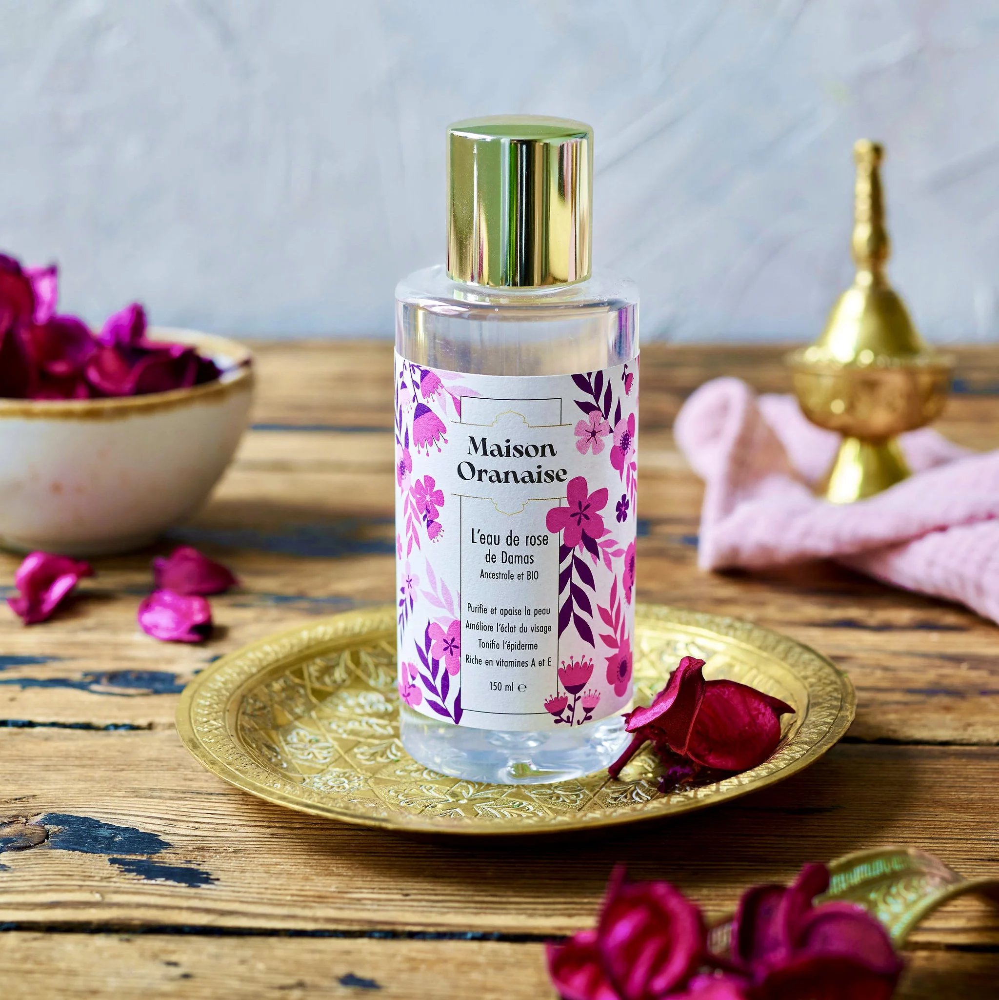

Nos Produits


Eau de Rose
Distillée à partir des roses de la vallée du Dadès, hydratante et purifiante.
Découvrir →Les secrets de beauté naturels du Maroc

Distillée à partir des roses de la vallée du Dadès, hydratante et purifiante.
Découvrir →